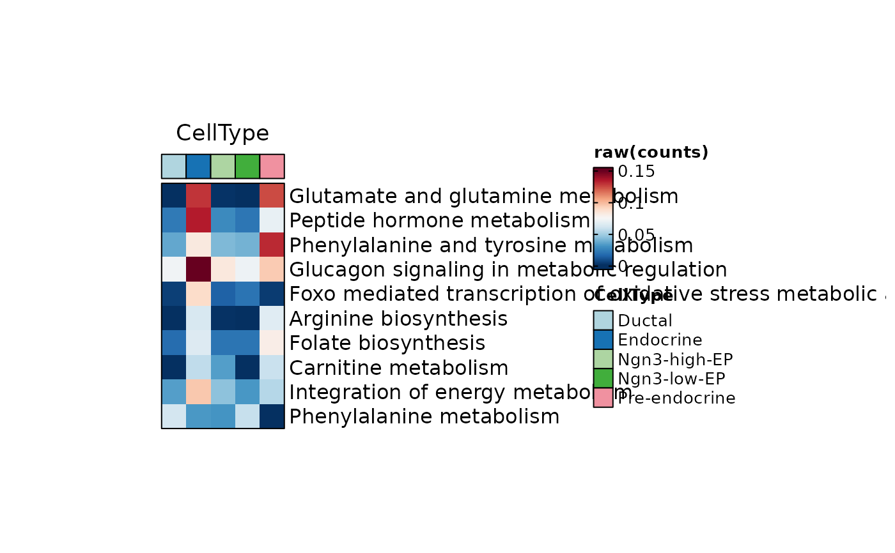
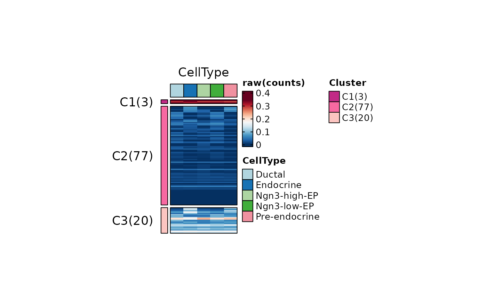
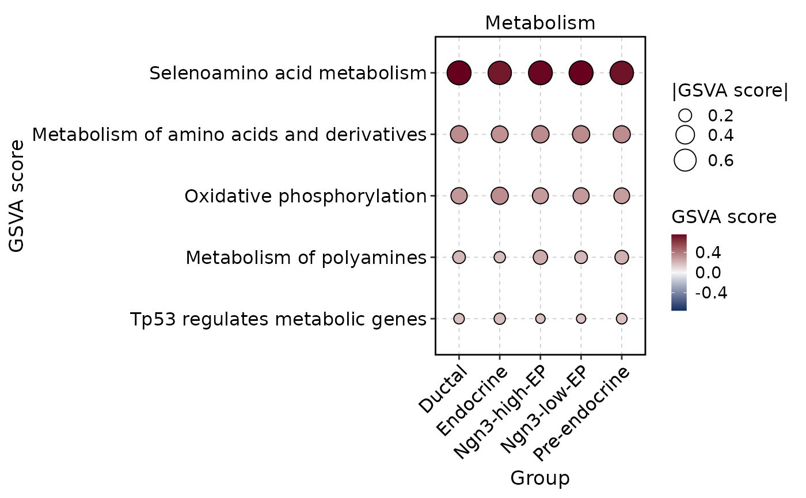
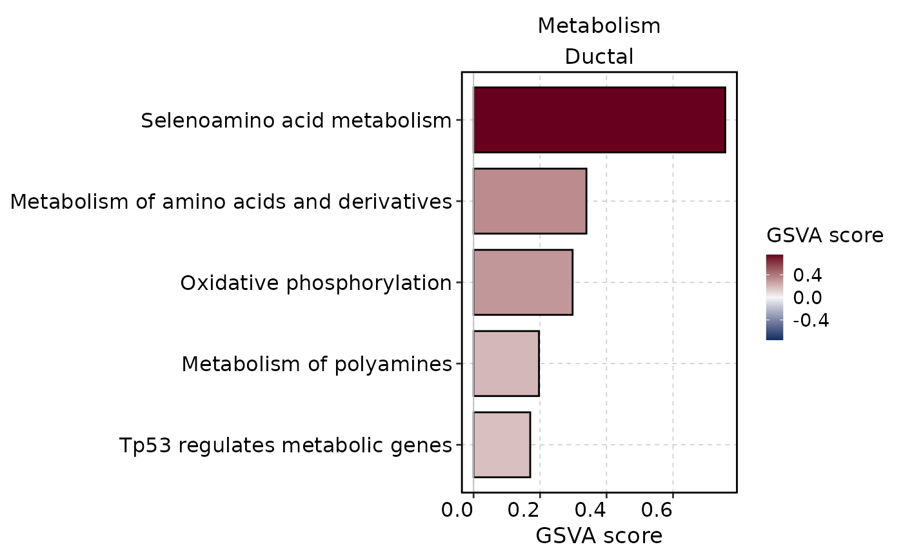
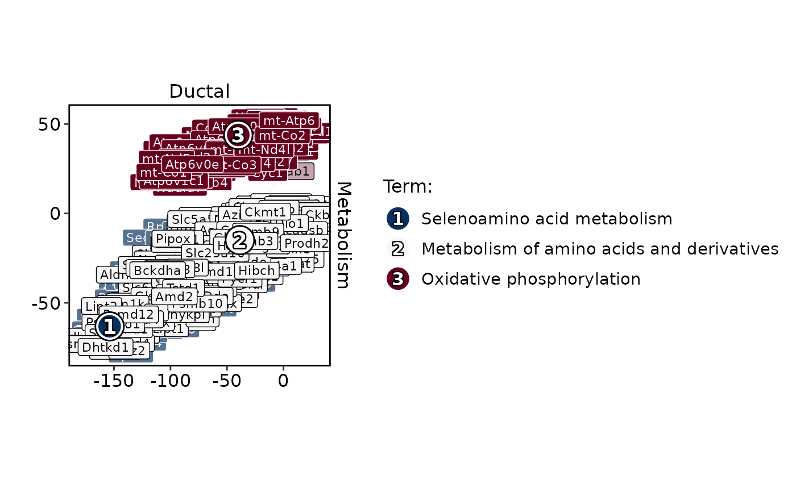
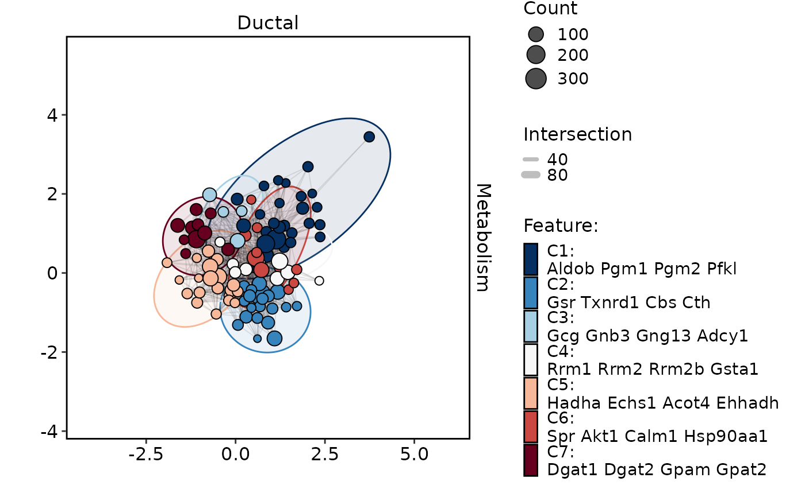
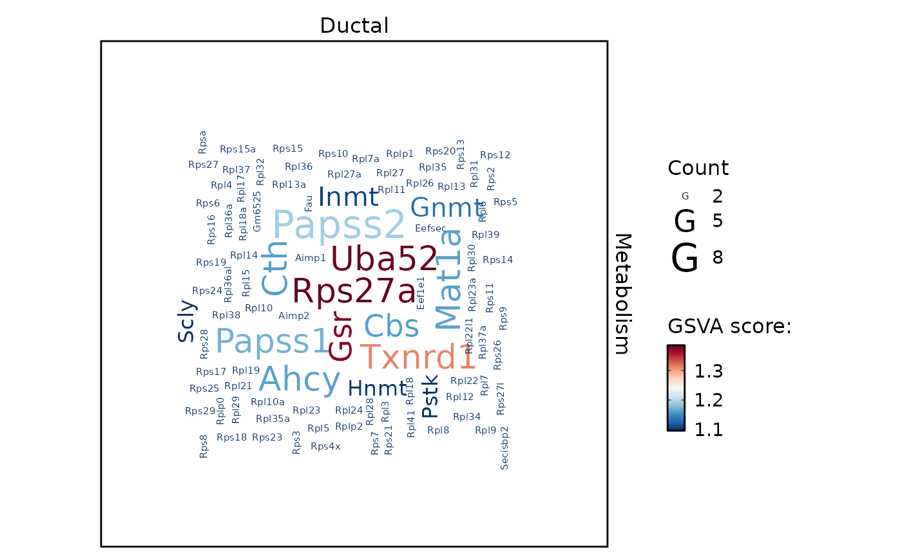
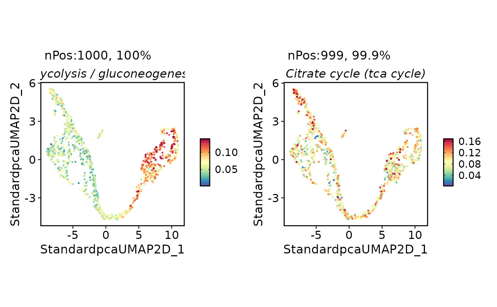
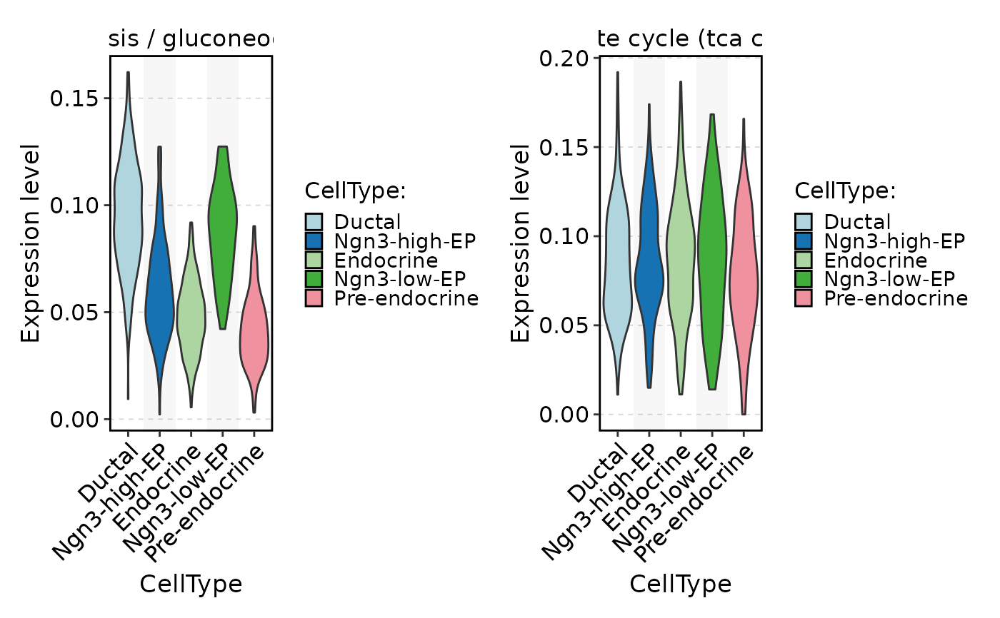

Plots for metabolism pathway scoring
Usage
MetabolismPlot(
object = NULL,
res = NULL,
group.by = NULL,
assay_name = "METABOLISM",
...,
verbose = TRUE,
srt = NULL
)Arguments
- object
A Seurat object containing the results of RunMetabolism.
- res
GSVA results generated by RunGSVA function. If provided, 'srt' and 'group.by' are ignored.
- group.by
Grouping variable used in RunMetabolism.
- assay_name
Assay or tools slot containing metabolism results.
- ...
Additional arguments passed to GSVAPlot.
- verbose
Whether to print messages.
- srt
Deprecated alias for
object; supply exactly one of the two. It will be removed in scop 1.0.0.
Examples
data(pancreas_sub)
pancreas_sub <- RunStandardWorkflow(pancreas_sub)
#> ℹ [2026-10-29 12:09:48] Start standard processing workflow...
#> ℹ [2026-10-29 12:09:48] Checking a list of <Seurat>...
#> ! [2026-10-29 12:09:48] Data 1/1 of the `srt_list` is "unknown"
#> ℹ [2026-10-29 12:09:48] Perform `NormalizeData()` with `normalization.method = 'LogNormalize'` on 1/1 of `srt_list`...
#> ℹ [2026-10-29 12:09:48] Perform `FindVariableFeatures()` on 1/1 of `srt_list`...
#> ℹ [2026-10-29 12:09:48] Use the separate HVF from `srt_list`
#> ℹ [2026-10-29 12:09:48] Number of available HVF: 2000
#> ℹ [2026-10-29 12:09:48] Finished check
#> ℹ [2026-10-29 12:09:48] Perform `ScaleData()`
#> ℹ [2026-10-29 12:09:48] Perform pca linear dimension reduction
#> ℹ [2026-10-29 12:09:49] Use stored estimated dimensions 1:23 for Standardpca
#> ℹ [2026-10-29 12:09:49] Perform `Seurat::FindClusters()` with `cluster_algorithm = 'louvain'` and `cluster_resolution = 0.6`
#> ℹ [2026-10-29 12:09:49] Reorder clusters...
#> ℹ [2026-10-29 12:09:49] Skip `log1p()` because `layer = data` is not "counts"
#> ℹ [2026-10-29 12:09:49] Perform umap nonlinear dimension reduction
#> ✔ [2026-10-29 12:09:57] Standard processing workflow completed
pancreas_sub <- RunMetabolism(
pancreas_sub,
db = c("KEGG", "REACTOME"),
group.by = "CellType",
species = "Mus_musculus",
Ensembl_version = 115,
method = "AUCell",
use_preparedb = FALSE
)
#> ℹ [2026-10-29 12:09:57] Start metabolism pathway scoring
#> ℹ [2026-10-29 12:09:57] Data type is raw counts
#> ℹ [2026-10-29 12:09:57] Averaging expression by "CellType" ...
#> ℹ [2026-10-29 12:09:57] Aggregated expression: 15998 genes x 5 groups
#> ℹ [2026-10-29 12:09:57] Using raw scMetabolism gene sets with species conversion to "Mus_musculus"
#> ℹ [2026-10-29 12:09:58] Converting 3297 human gene symbols to "Mus_musculus" via biomaRt ...
#> ℹ [2026-10-29 12:09:58] Connect to the Ensembl archives...
#> ℹ [2026-10-29 12:10:16] Using the 115 version of ensembl database...
#> ℹ [2026-10-29 12:10:16] Downloading the ensembl database from https://sep2025.archive.ensembl.org...
#> ℹ [2026-10-29 12:10:16] Searching the dataset hsapiens ...
#> ℹ [2026-10-29 12:10:17] Connecting to the dataset hsapiens_gene_ensembl ...
#> ! [2026-10-29 12:11:44] <error/httr2_failure>
#> ! Error in `req_perform()`:
#> ! ! Failed to perform HTTP request.
#> ! Caused by error in `curl::curl_fetch_memory()`:
#> ! ! Timeout was reached [sep2025.archive.ensembl.org]:
#> ! Operation timed out after 60001 milliseconds with 0 bytes received
#> ! ---
#> ! Backtrace:
#> ! ▆
#> ! 1. ├─global record(if (plan$full) "full-site" else "incremental-site", build())
#> ! 2. │ └─base::force(expression)
#> ! 3. └─global build()
#> ! 4. └─pkgdown::build_site(...)
#> ! 5. └─pkgdown:::build_site_local(...)
#> ! 6. └─pkgdown::build_reference(...)
#> ! 7. ├─pkgdown:::unwrap_purrr_error(...)
#> ! 8. │ └─base::withCallingHandlers(...)
#> ! 9. └─purrr::map(...)
#> ! 10. └─purrr:::map_("list", .x, .f, ..., .progress = .progress)
#> ! 11. ├─purrr:::with_indexed_errors(...)
#> ! 12. │ └─base::withCallingHandlers(...)
#> ! 13. ├─purrr:::call_with_cleanup(...)
#> ! 14. └─pkgdown (local) .f(.x[[i]], ...)
#> ! 15. ├─base::withCallingHandlers(...)
#> ! 16. └─pkgdown:::data_reference_topic(...)
#> ! 17. └─pkgdown:::run_examples(...)
#> ! 18. └─pkgdown:::highlight_examples(code, topic, env = env)
#> ! 19. └─downlit::evaluate_and_highlight(...)
#> ! 20. └─evaluate::evaluate(code, child_env(env), new_device = TRUE, output_handler = output_handler)
#> ! 21. ├─base::withRestarts(...)
#> ! 22. │ └─base (local) withRestartList(expr, restarts)
#> ! 23. │ ├─base (local) withOneRestart(withRestartList(expr, restarts[-nr]), restarts[[nr]])
#> ! 24. │ │ └─base (local) doWithOneRestart(return(expr), restart)
#> ! 25. │ └─base (local) withRestartList(expr, restarts[-nr])
#> ! 26. │ └─base (local) withOneRestart(expr, restarts[[1L]])
#> ! 27. │ └─base (local) doWithOneRestart(return(expr), restart)
#> ! 28. ├─evaluate:::with_handlers(...)
#> ! 29. │ ├─base::eval(call)
#> ! 30. │ │ └─base::eval(call)
#> ! 31. │ └─base::withCallingHandlers(...)
#> ! 32. ├─base::withVisible(eval(expr, envir))
#> ! 33. └─base::eval(expr, envir)
#> ! 34. └─base::eval(expr, envir)
#> ! 35. └─scop::RunMetabolism(...)
#> ! 36. ├─base::tryCatch(...)
#> ! 37. │ └─base (local) tryCatchList(expr, classes, parentenv, handlers)
#> ! 38. │ └─base (local) tryCatchOne(expr, names, parentenv, handlers[[1L]])
#> ! 39. │ └─base (local) doTryCatch(return(expr), name, parentenv, handler)
#> ! 40. └─scop::GeneConvert(...)
#> ! 41. ├─thisutils::try_get(...)
#> ! 42. │ ├─base::tryCatch(...) at thisutils/R/utils.R:391:5
#> ! 43. │ │ └─base (local) tryCatchList(expr, classes, parentenv, handlers)
#> ! 44. │ │ └─base (local) tryCatchOne(expr, names, parentenv, handlers[[1L]])
#> ! 45. │ │ └─base (local) doTryCatch(return(expr), name, parentenv, handler)
#> ! 46. │ └─base::eval.parent(substitute(expr)) at thisutils/R/utils.R:391:5
#> ! 47. │ └─base::eval(expr, p)
#> ! 48. │ └─base::eval(expr, p)
#> ! 49. └─scop:::connect_biomart_dataset(...)
#> ! 50. ├─base::tryCatch(...)
#> ! 51. │ └─base (local) tryCatchList(expr, classes, parentenv, handlers)
#> ! 52. │ └─base (local) tryCatchOne(expr, names, parentenv, handlers[[1L]])
#> ! 53. │ └─base (local) doTryCatch(return(expr), name, parentenv, handler)
#> ! 54. └─biomaRt::useDataset(dataset = dataset, mart = mart)
#> ! 55. └─biomaRt:::.getAttributes(mart, verbose = verbose)
#> ! 56. └─biomaRt:::.getAttrFilt(mart = mart, verbose = verbose, type = "attributes")
#> ! 57. └─biomaRt:::bmRequest(...)
#> ! 58. └─httr2::req_perform(request)
#> ! [2026-10-29 12:11:44] Get errors when connecting with Dataset (hsapiens_gene_ensembl)
#> ! [2026-10-29 12:11:45] Retrying...
#> ℹ [2026-10-29 12:11:46] Converting the geneIDs...
#> ℹ [2026-10-29 12:11:53] 3256 genes mapped with "ensembl_symbol"
#> ℹ [2026-10-29 12:11:59] 13 genes mapped with "entrez_symbol"
#> ℹ [2026-10-29 12:12:05] 6 genes mapped with "uniprot_symbol"
#> ℹ [2026-10-29 12:12:08] ==============================
#> ℹ 3275 genes mapped
#> ℹ 22 genes unmapped
#> ℹ ==============================
#> ✔ [2026-10-29 12:12:09] Species conversion added 207 gene matches across pathways
#> ℹ [2026-10-29 12:12:09] Total metabolism gene sets to score: 127
#> ✔ [2026-10-29 12:12:09] Metabolism scores stored in tools slot "Metabolism_CellType_AUCell"
ht1 <- MetabolismPlot(
pancreas_sub,
group.by = "CellType",
plot_type = "heatmap",
topTerm = 10,
show_row_names = TRUE,
width = 1,
height = 2
)
ht1$plot

ht2 <- MetabolismPlot(
pancreas_sub,
group.by = "CellType",
plot_type = "heatmap",
n_split = 3,
topTerm = 100,
use_raster = TRUE,
width = 1,
height = 2
)
ht2$plot

MetabolismPlot(
pancreas_sub,
group.by = "CellType",
db = "GO_BP",
plot_type = "comparison",
topTerm = 5
)

MetabolismPlot(
pancreas_sub,
group.by = "CellType",
db = "GO_BP",
group_use = "Ductal",
plot_type = "bar",
topTerm = 5
)

MetabolismPlot(
pancreas_sub,
group.by = "CellType",
group_use = "Ductal",
db = "GO_BP",
plot_type = "network",
topTerm = 3
)
#> ✔ [2026-10-29 12:12:12] shadowtext installed successfully

MetabolismPlot(
pancreas_sub,
group.by = "CellType",
group_use = "Ductal",
db = "GO_BP",
plot_type = "enrichmap"
)

MetabolismPlot(
pancreas_sub,
group.by = "CellType",
group_use = "Ductal",
plot_type = "wordcloud",
word_type = "feature"
)

pancreas_sub <- RunMetabolism(
pancreas_sub,
assay_name = "METABOLISM",
db = c("KEGG", "REACTOME"),
species = "Mus_musculus",
Ensembl_version = 115,
use_preparedb = FALSE
)
#> ℹ [2026-10-29 12:12:17] Start metabolism pathway scoring
#> ℹ [2026-10-29 12:12:18] Data type is raw counts
#> ℹ [2026-10-29 12:12:18] Using raw scMetabolism gene sets with species conversion to "Mus_musculus"
#> ℹ [2026-10-29 12:12:18] Converting 3297 human gene symbols to "Mus_musculus" via biomaRt ...
#> ℹ [2026-10-29 12:12:18] Connect to the Ensembl archives...
#> ℹ [2026-10-29 12:12:19] Using the 115 version of ensembl database...
#> ℹ [2026-10-29 12:12:19] Downloading the ensembl database from https://sep2025.archive.ensembl.org...
#> ℹ [2026-10-29 12:12:19] Searching the dataset hsapiens ...
#> ℹ [2026-10-29 12:12:19] Connecting to the dataset hsapiens_gene_ensembl ...
#> ℹ [2026-10-29 12:12:20] Converting the geneIDs...
#> ℹ [2026-10-29 12:12:20] 3256 genes mapped with "ensembl_symbol"
#> ℹ [2026-10-29 12:12:21] 13 genes mapped with "entrez_symbol"
#> ℹ [2026-10-29 12:12:22] 6 genes mapped with "uniprot_symbol"
#> ℹ [2026-10-29 12:12:22] ==============================
#> ℹ 3275 genes mapped
#> ℹ 22 genes unmapped
#> ℹ ==============================
#> ✔ [2026-10-29 12:12:23] Species conversion added 207 gene matches across pathways
#> ℹ [2026-10-29 12:12:23] Total metabolism gene sets to score: 127
#> ✔ [2026-10-29 12:12:23] Metabolism scores stored in tools slot "Metabolism_AUCell"
#> ℹ [2026-10-29 12:12:23] Metabolism scores also stored in assay "METABOLISM"
FeatureDimPlot(
pancreas_sub,
assay = "METABOLISM",
features = rownames(pancreas_sub[["METABOLISM"]])[1:2],
reduction = "umap"
)

FeatureStatPlot(
pancreas_sub,
stat.by = rownames(pancreas_sub[["METABOLISM"]])[1:2],
group.by = "CellType",
assay = "METABOLISM"
)

ht <- GroupHeatmap(
pancreas_sub,
exp_legend_title = "Z-score",
features = rownames(pancreas_sub[["METABOLISM"]])[1:10],
group.by = "CellType",
assay = "METABOLISM",
width = 1,
height = 2
)
#> ! [2026-10-29 12:12:25] The values in the "counts" layer are non-integer. Set the library size to "1"